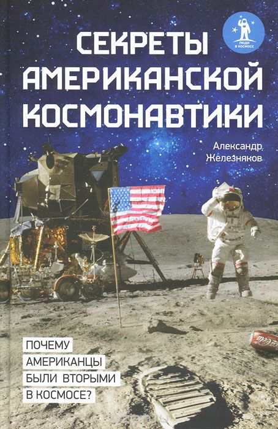

Очерки истории космонавтики США

По материалам книги Александра Борисовича Железнякова
" Секреты американской космонавтики. "
А также из других источников Интернет
Уважаемый Читатель - после ознакомления с Книгой
рекомендую Вам заказать ее бумажное издание.
В книге представлена исчерпывающая история развития ракетной техники и космонавтики в США. Повествование построено в виде увлекательного рассказа про то, почему американцы были лишь вторыми в космосе и первыми на Луне и Марсе, кем была изобретена пушка для выстрела в космос и можно ли было бомбить Москву из «Спейс Шаттла»? Максимально подробно описаны все значимые проекты американской космонавтики. Автор – советник президента РКК «Энергия», известнейший популяризатор достижений отечественной и мировой космонавтики, автор многочисленных публикаций на космическую тематику.
- Пролог.
- Часть I. Первые американские ракеты.
- Глава 1. Ракеты Годдарда.
- Глава 2. «Американское ракетное общество».
- Глава 3. Группа Теодора фон Кармана.
- Глава 4. «Фау-2» в Америке.
- Глава 5. Операции «Сэнди» и «Пушовер».
- Глава 6. «Викинг», «Аэроби» и другие.
- Глава 7. Самолеты серии «Х».
- Глава 8. Первая американская баллистическая ракета.
- Отступление первое. Эксперименты доктора Стаппа.
- Часть II. Космическая эра начинается.
- Глава 9. Проект «РЭНД».
- Глава 10. Спутник Фреда Зингера.
- Глава 11. Проект «Орбитер».
- Глава 12. «Авангард», который оказался в арьергарде.
- Глава 13. Проект «Фарсайд».
- Глава 14. Первый старт, первая неудача.
- Глава 15. На орбите «Эксплорер-1».
- Глава 16. Секретный проект американского флота.
- Глава 17. Операция «Аргус».
- Глава 18. Как Луна едва не стала ядерным полигоном.
- Отступление второе. Из пушки – на Луну!.
- Часть III. «Человек в космосе в кратчайший срок».
- Глава 19. Проект «Адам».
- Глава 20. Рождение «Меркурия».
- Глава 21. Воздушные шары и прыжки из стратосферы.
- Глава 22. Все-таки они не успели.
- Глава 23. Первые американцы в космосе.
- Глава 24. Группа «Меркурий-13».
- Глава 25. Ракетный самолет Х-15.
- Глава 26. Программа «Дайнасор».
- Отступление третье. Человек-ракета.
- Часть IV. Лунная гонка.
- Глава 27. Речь президента Кеннеди.
- Глава 28. Откуда появился «Аполлон».
- Глава 29. Программа «Лунэкс».
- Глава 30. Полеты «Близнецов».
- Глава 31. «Рейнджеры», «Сервейоры», «Орбитеры» и прочие.
- Глава 32. Орбитальная станция MOL.
- Глава 33. Пожар на мысе Канаверал.
- Глава 34. Лунная гонка приближается к развязке.
- Глава 35. Вокруг Луны.
- Глава 36. В Море Спокойствия.
- Глава 37. Непроизнесенная речь президента Никсона.
- Глава 38. Как пытались сбить с курса «Аполлон-11».
- Глава 39. Высадка в Океане Бурь.
- Глава 40. Миссия с несчастливым номером.
- Глава 41. Капсула времени.
- Глава 42. Последние «Аполлоны».
- Глава 43. О военных аспектах лунной программы США.
- Глава 44. Орбитальная станция «Скайлэб».
- Глава 45. Советско-американский космический полет.
- Глава 46. Тур по Солнечной системе.
- Глава 47. «Викинги» на Марсе.
- Отступление четвертое. Цель – Икар.
- Часть V. «Звездные войны».
- Глава 48. Президент Рейган и программа СОИ .
- Глава 49. Истребитель спутников.
- Глава 50. «Черная тема».
- Глава 51. «Маковое зернышко».
- Глава 52. Навигационная система «Транзит».
- Глава 53. Система глобального позиционирования.
- Глава 54. Секретные NOSS’ы.
- Глава 55. «Спейс Шаттл» – детище холодной войны.
- Глава 56. Взрыв «Челленджера».
- Глава 57. Окончание противостояния: новые реалии.
- Глава 58. Гибель «Колумбии».
- Отступление пятое. Марсианские проекты фон Брауна.
- Эпилог.
- Список использованной литературы.
- Примечания.